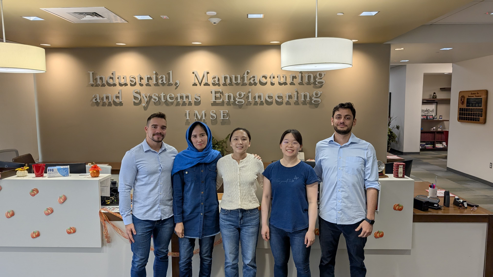
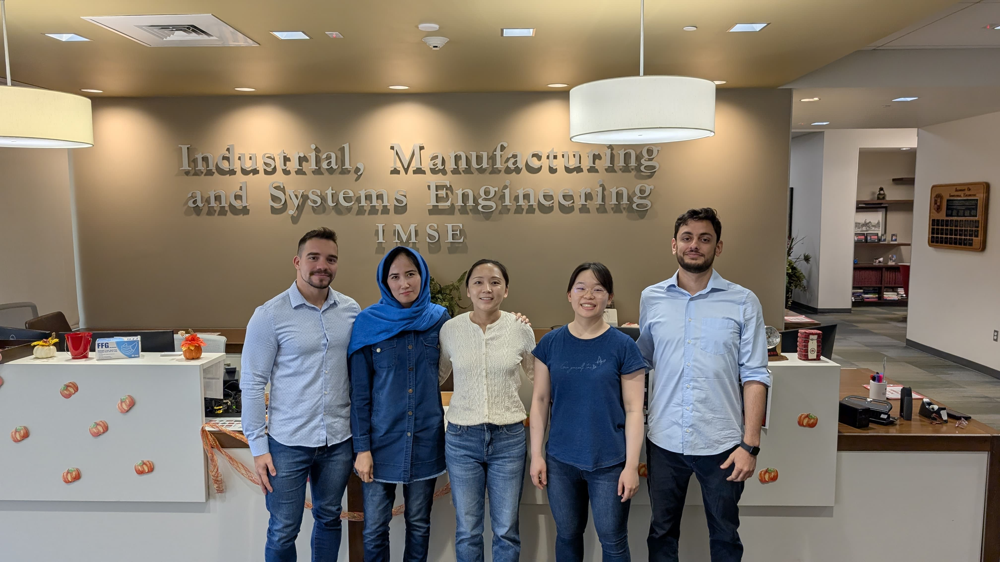
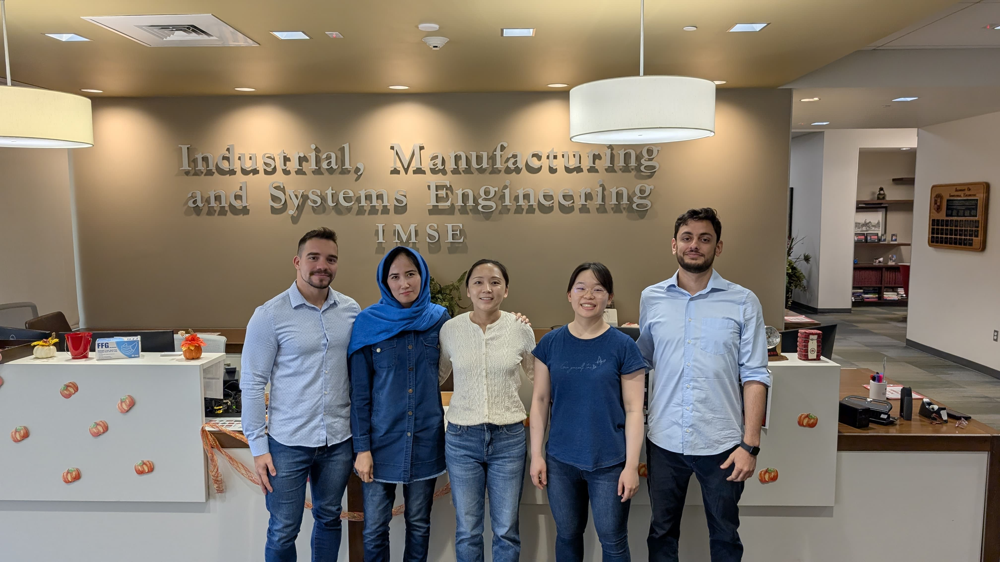

The INFORMS Student Chapter at Texas Tech is affiliated with INFORMS (Institute for Operations Research and Management Science), the largest institute in the world for the professionals in the field of Operations Research, Management Sciences, and advanced analytics.

The INFORMS Student Chapter at Texas Tech aims to
Encourage TTU students and facilitate interest in operations research (OR), management sciences (MS), and analytics.
Provide an informal means of sharing information about the methods and techniques of OR/MS.
Provide PhD students with opportunities for professional development.
Offer support and foster inclusion for all PhD students, recognizing that the PhD journey is challenging, especially for the many international students who face unique hurdles.
The INFORMS Student Chapter at Texas Tech is in coordination with INFORMS, Texas Tech University, and Edward E. Whitacre Jr. College of Engineering - Department of Industrial and Systems Engineering.

 
